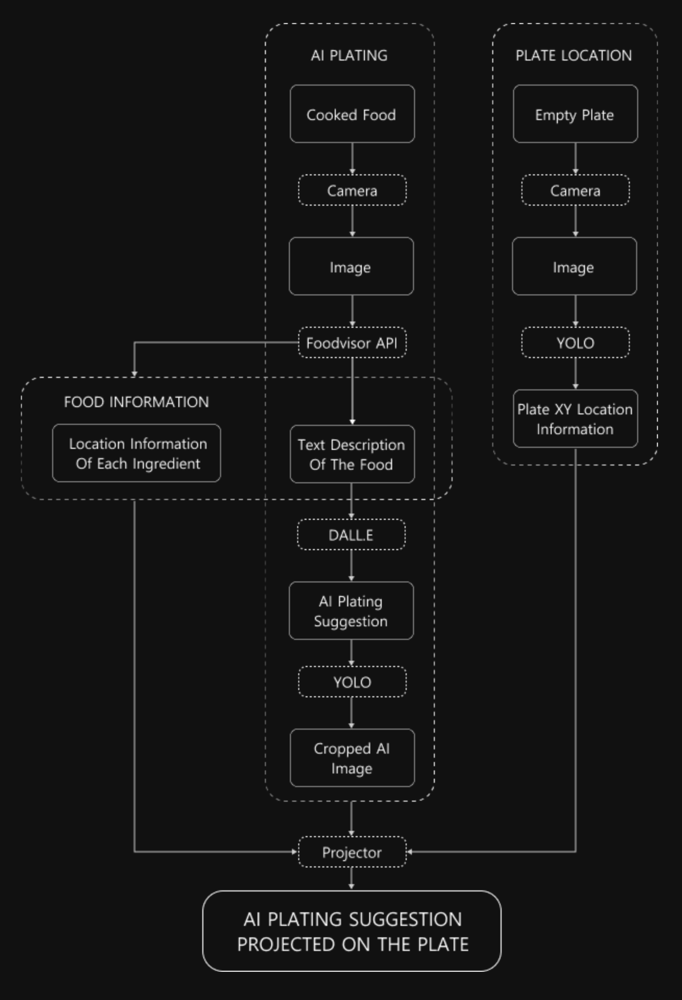
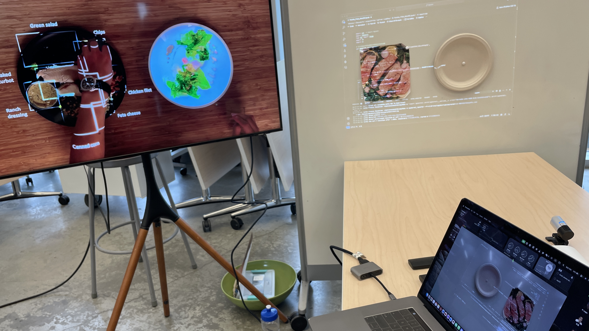
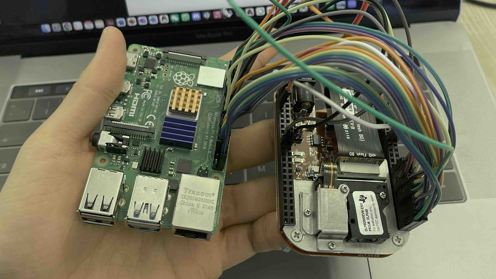
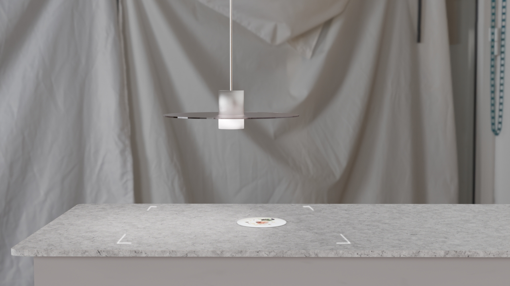
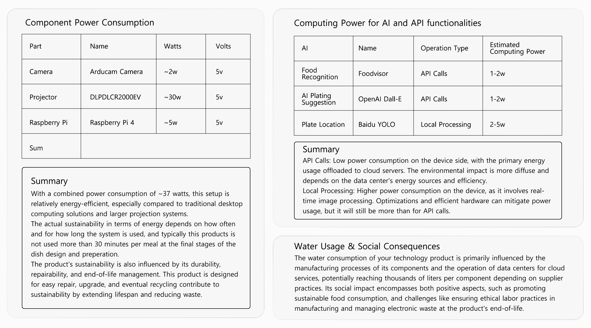

Palette Plate is an innovative kitchen gadget that revolutionizes plating by combining a Raspberry Pi, projector, camera, and AI (Open AI, Foodvisor, YOLOv8). It offers plating inspiration, measures food and plate sizes, and sets visual boundaries on kitchen surfaces to improve space use and efficiency. This AI-powered tool ensures precise plating and supports sustainability by reducing the need for multiple plates, making professional plating easy and eco-friendly.
PALETTE PLATE leverages AI to offer unlimited plating inspirationas, encouraging chefs to experiment with creative presentations effortlessly.
By accurately guiding the plating process, PALETTE PLATE minimizes unnecessary trials, effectively cutting down on food waste and promoting sustainability in the kitchen.
This tool simplifies the art of plating, enhancing the overall culinary experience by making sophisticated presentations achievable for chefs at any skill level.
With its advanced technology, PALETTE PLATE provides precise measurements of ingredients and plates, ensuring each dish is presented with perfection and consistency.
Chef Alex represents a young, ambitious chef navigating the transition from culinary education to professional cooking, facing challenges in continuous learning, creative expression, and the integration of technology into culinary arts.Based on our interview with Chef Alex, we created a list of Palette Plate’s potential users:
Culinary Innovator
Creative Presenter
Culinary Skill Enhancer
Community Seeker
Social Culinary Artist
Continuous Learner
Resourcefulness
Career Transitioner
Technology Enthusiast
# PALETTE PLATE by Bob Tianqi Wei, Stephanie Wang, Cen Yang
import cv2 # Import OpenCV
import requests
from PIL import Image
import io
import os
# Define a function to generate and save images from OpenAI locally
def generate_image(prompt):
headers = {
'Authorization': 'Bearer **************',
'Content-Type': 'application/json',
}
data = {
'prompt': prompt,
'n': 1, # Number of images to generate
'size': '512x512', # Image size
}
response = requests.post('https://api.openai.com/v1/images/generations', headers=headers, json=data)
return response.json()
# Define a function to download and save images from a URL to a specified path
def download_image_from_url(url, save_path):
# Ensure the directory of the save path exists
os.makedirs(os.path.dirname(save_path), exist_ok=True)
# Download and save the image
response = requests.get(url)
image = Image.open(io.BytesIO(response.content))
image.save(save_path)
print(f"Image saved to {save_path}")
cap = cv2.VideoCapture(0)
if not cap.isOpened():
raise IOError("Cannot open webcam")
ret, frame = cap.read()
cv2.imwrite('captured_image.jpg', frame)
cap.release()
# Send image to API for analysis
url = "https://vision.foodvisor.io/api/1.0/en/analysis/"
headers = {"Authorization": "Api-Key ***********************"}
with open("captured_image.jpg", "rb") as image:
response = requests.post(url, headers=headers, files={"image": image})
response.raise_for_status()
data = response.json()
food_items = []
for item in data.get('items', []):
for food in item.get('food', []):
food_name = food.get('food_info', {}).get('display_name', 'Unknown')
confidence = food.get('confidence', 0)
if confidence >= 0.1:
food_items.append((food_name, confidence))
food_items.sort(key=lambda x: x[1], reverse=True)
top_10_food_items = food_items[:10]
if top_10_food_items:
food_names = [food for food, _ in top_10_food_items]
prompt = f"A photorealistic bird's-eye view of an elegant and expansive fine dining presentation, featuring a single, pristine white circled background perfectly centered on a black background. The circled plate artfully displays ingredients: {', '.join(food_names)}. The plate should fulfill the entire image. No utensils, only food."
print(f"Generated Prompt: {prompt}")
result = generate_image(prompt)
if 'data' in result and result['data']:
image_url = result['data'][0]['url']
saved_image_path = 'path/to/save/image.jpg' # Set the image save path
download_image_from_url(image_url, saved_image_path)
else:
print("Failed to generate image.")
else:
print("No suitable food items detected for image generation.")Camera Setting & AI Plating Image
# PALETTE PLATE by Bob Tianqi Wei, Stephanie Wang, Cen Yang
import cv2
import numpy as np
from ultralytics import YOLOWorld
# Initialize the YOLO-World model
model = YOLOWorld('yolov8s-worldv2.pt') # Alternatively, choose another model size
# Define the classes to detect
model.set_classes(["bowl"])
# Perform classification prediction on the specified image
image_path_1 = 'captured_image.jpg'
results = model.predict(image_path_1)
results[0].show()
if hasattr(results[0], 'boxes'):
for box in results[0].boxes:
# Assuming 'box' contains bounding box coordinates
# The exact attributes containing the coordinates may vary
print(f"Bounding Box Coordinates: {box.xyxy}")
bounding_box = box.xyxy[0] # Extract the first set of coordinates from the tensor, assuming each 'box' contains only one bounding box
# Extract xmin, ymin, xmax, ymax separately
xmin = bounding_box[0].item()
ymin = bounding_box[1].item()
xmax = bounding_box[2].item()
ymax = bounding_box[3].item()
# Print the coordinates
print(f"Bounding Box Coordinates: xmin={xmin}, ymin={ymin}, xmax={xmax}, ymax={ymax}")
# Save the coordinates to a file
with open('bounding_box_coordinates.txt', 'w') as file:
file.write(f"{xmin},{ymin},{xmax},{ymax}")Empty Plate Location Information
# PALETTE PLATE by Bob Tianqi Wei, Stephanie Wang, Cen Yang
from ultralytics import YOLOWorld
import cv2
import numpy as np
# Initialize the YOLO-World model
model = YOLOWorld('yolov8s-worldv2.pt') # Or choose a different model size
# Define the classes to detect
model.set_classes(["bowl"])
# Perform classification prediction on the specified image
image_path = 'path/to/save/image.jpg'
results = model.predict(image_path)
results[0].show()
if hasattr(results[0], 'boxes'):
for box in results[0].boxes:
# Assuming 'box' contains bounding box coordinates
# The exact attributes containing the coordinates may vary
print(f"Bounding Box Coordinates: {box.xyxy}")
bounding_box = box.xyxy[0] # Extract the first set of coordinates from the tensor, assuming each 'box' contains only one bounding box
# Extract xmin, ymin, xmax, ymax separately
xmin = bounding_box[0].item()
ymin = bounding_box[1].item()
xmax = bounding_box[2].item()
ymax = bounding_box[3].item()
# Print the coordinates
print(f"Bounding Box Coordinates: xmin={xmin}, ymin={ymin}, xmax={xmax}, ymax={ymax}")
# Save the coordinates to a file
with open('bounding_box_coordinates.txt', 'w') as file:
file.write(f"{xmin},{ymin},{xmax},{ymax}")
original_image = cv2.imread(image_path)
# Crop the image using the provided coordinates
cropped_image = original_image[int(ymin):int(ymax), int(xmin):int(xmax)]
# Save the cropped image
cropped_image_path = 'path/to/save/cropped_image.jpg' # Define the save path for the cropped image
cv2.imwrite(cropped_image_path, cropped_image)
print(f"Cropped image saved to: {cropped_image_path}")
Crop AI Plating Image
# PALETTE PLATE by Bob Tianqi Wei, Stephanie Wang, Cen Yang
import cv2
import numpy as np
# Read bounding box coordinates
with open('bounding_box_coordinates.txt', 'r') as file:
xmin, ymin, xmax, ymax = [int(float(coord)) for coord in file.read().split(',')]
# Load the original image to get size information
original_image_path = 'captured_image.jpg'
original_image = cv2.imread(original_image_path)
h, w = original_image.shape[:2]
# Create a black image of the same size as the original
black_background_image = np.zeros((h, w, 3), np.uint8)
# Load the image to replace
replacement_image_path = 'path/to/save/cropped_image.jpg' # Adjusted to placeholder
replacement_image = cv2.imread(replacement_image_path)
# Determine the dimensions of the bounding box
width, height = xmax - xmin, ymax - ymin
# Resize the replacement image to fit the bounding box
resized_replacement_image = cv2.resize(replacement_image, (width, height))
# Ensure the replacement area does not exceed the background dimensions
height, width = resized_replacement_image.shape[:2]
end_y, end_x = ymin + height, xmin + width
# Replace the area within the bounding box on the black background with the resized image
black_background_image[ymin:end_y, xmin:end_x] = resized_replacement_image[:(end_y-ymin), :(end_x-xmin)]
# Display the result
cv2.imshow("Black Background with Replacement Image", black_background_image)
cv2.waitKey(0)
cv2.destroyAllWindows()
# Optional: Save the result image
cv2.imwrite('black_background_with_replacement_image.jpg', black_background_image)Cast AI Plating Image on Empty Plate

In the initial demonstration phase, we use a camera, a Xiaomi projector, and a laptop to ensure all digital components work together seamlessly. This step is vital to confirm the functionality of the electronic parts before advancing to the physical product design. It helps us identify and resolve any issues early, setting a solid foundation for further development.

We are currently in the process of constructing a physical product that is centered around the use of a Raspberry Pi as its core computational unit. Our objective is to integrate this model seamlessly within the ROS environment. The choice of Raspberry Pi is motivated by its compactness, affordability, and the versatility it offers as a computing platform, making it an ideal candidate for our project's requirements.


